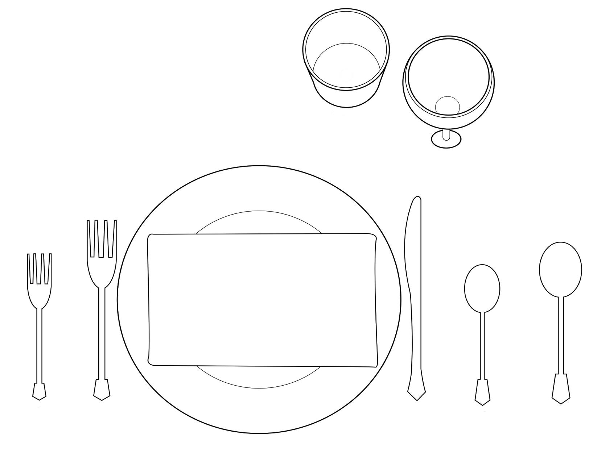

Food and Human Nutrition
Form Two
Revision exercise 4

Salad fork
Dinner
fork
Dinner knife
Tea spoon
Soup spoon
Napkin
Water glass
Wine glass
Figure 4.3: Informal table setting
Activity 4.15
Table setting
Visit a nearby restaurant or hotel during lunch time and observe the table setting.
Describe the type of table setting observed.
Choose the correct answer.
1. You have been given the following dishes which form a meal: fish curry, coconut rice, braised cabbage and mixed fruit salad. What is the category of this meal?